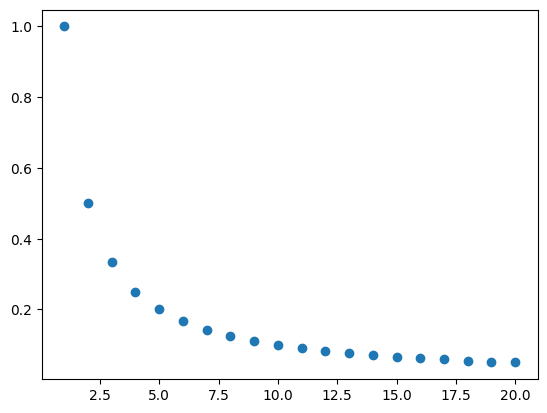
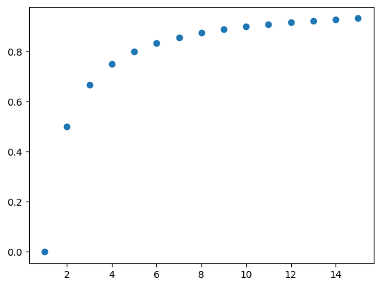

Sucesiones#
Una sucesión \(S_n\) es una función cuyo dominio es el conjunto de números naturales \(\mathbb{N}\) y el contradominio es el conjunto de números reales \(\mathbb R\):
Por ejemplo:
\begin{aligned} S_n & = \frac{1}{n}\ \alpha_n & = n\ \beta_n & = (-1)^{n}\ \gamma_n & = 2n \end{aligned}
##Cálculo de los términos de una sucesión.
Para calcular los términos de una sucesión podemos utilizar el ciclo for.
En la siguiente celda de código se calculan los términos se la sucesión \(S_n=\frac{1}{n}\) para valores de \(n\leq20\)
for n in range(1,21):
Sn=1/n
print("Para",n,"el valor de Sn=1/n es:",Sn)
Para 1 el valor de Sn=1/n es: 1.0
Para 2 el valor de Sn=1/n es: 0.5
Para 3 el valor de Sn=1/n es: 0.3333333333333333
Para 4 el valor de Sn=1/n es: 0.25
Para 5 el valor de Sn=1/n es: 0.2
Para 6 el valor de Sn=1/n es: 0.16666666666666666
Para 7 el valor de Sn=1/n es: 0.14285714285714285
Para 8 el valor de Sn=1/n es: 0.125
Para 9 el valor de Sn=1/n es: 0.1111111111111111
Para 10 el valor de Sn=1/n es: 0.1
Para 11 el valor de Sn=1/n es: 0.09090909090909091
Para 12 el valor de Sn=1/n es: 0.08333333333333333
Para 13 el valor de Sn=1/n es: 0.07692307692307693
Para 14 el valor de Sn=1/n es: 0.07142857142857142
Para 15 el valor de Sn=1/n es: 0.06666666666666667
Para 16 el valor de Sn=1/n es: 0.0625
Para 17 el valor de Sn=1/n es: 0.058823529411764705
Para 18 el valor de Sn=1/n es: 0.05555555555555555
Para 19 el valor de Sn=1/n es: 0.05263157894736842
Para 20 el valor de Sn=1/n es: 0.05
Ejercicios#
Escribe códigos que evalúen los términos de las siguientes sucesiones:
\(\displaystyle \alpha_n =1+\frac{1}{n}\), con \(n\leq10\)
\(\displaystyle \beta_n = (-1)^n\), con \(n\leq10\)
\(\displaystyle \gamma_n = \sin\Big(13+\frac{1}{n^2}\Big)\), con \(n\leq10\)
\(\displaystyle \delta_n=\frac{1}{n^2}\), con \(n\leq10\)
\(\displaystyle \theta_n=\frac{n}{n+1}\), con \(n\leq15\)
\(\displaystyle S_n=\frac{n+3}{n^3+4}\), con \(n\leq25\)
\(\displaystyle R_n=\frac{n!}{n^n}\), con \(n\leq10\)
\(\displaystyle M_n=\frac{2n}{3n^2+2n+1}\), con \(n\leq20\)
\(\displaystyle Q_n=3n^n\), con \(n\leq20\)
\(\displaystyle W_n=\frac{3^n+(-1)^n}{3^{n+1}+(-1)^{n+1}}\), con \(n\leq20\)
Gráficas de Sucesiones#
Al igual que para una función, podemos trazar la gráfica de una suceción.
En el siguiente ejemplo se calculan los términos de la sucesión \(S_n=\frac{1}{n}\), con \(n \leq 20\) y se grafica la función.
from pylab import *
# Declaración de las listas donde se almacenarán los valores de la Sucesión
Sn=[]
n =[]
# Ciclo for para el cáculo de cada término k desde 1 hasta 20
for k in range(1,21):
Sn.append(1/k)
n.append(k)
print(Sn)
print(n)
scatter(n,Sn)
[1.0, 0.5, 0.3333333333333333, 0.25, 0.2, 0.16666666666666666, 0.14285714285714285, 0.125, 0.1111111111111111, 0.1, 0.09090909090909091, 0.08333333333333333, 0.07692307692307693, 0.07142857142857142, 0.06666666666666667, 0.0625, 0.058823529411764705, 0.05555555555555555, 0.05263157894736842, 0.05]
[1, 2, 3, 4, 5, 6, 7, 8, 9, 10, 11, 12, 13, 14, 15, 16, 17, 18, 19, 20]
<matplotlib.collections.PathCollection at 0x7efcc01b7e80>

Ejercicios#
Escribe el código que calcule y grafique cada una de las siguientes sucesiones:
\(\displaystyle \alpha_n =1+\frac{1}{n}\), con \(n\leq10\)
\(\displaystyle \beta_n = (-1)^n\), con \(n\leq10\)
\(\displaystyle \gamma_n = \sin\Big(13+\frac{1}{n^2}\Big)\), con \(n\leq10\)
\(\displaystyle \delta_n=\frac{1}{n^2}\), con \(n\leq10\)
\(\displaystyle \theta_n=\frac{n}{n+1}\), con \(n\leq15\)
\(\displaystyle S_n=\frac{n+3}{n^3+4}\), con \(n\leq25\)
\(\displaystyle R_n=\frac{n!}{n^n}\), con \(n\leq10\)
\(\displaystyle M_n=\frac{2n}{3n^2+2n+1}\), con \(n\leq20\)
\(\displaystyle Q_n=3n^n\), con \(n\leq20\)
\(\displaystyle W_n=\frac{3^n+(-1)^n}{3^{n+1}+(-1)^{n+1}}\), con \(n\leq20\)
Límite de una sucesión#
Una sucesión \(S_n\) converge hacia el número \(L\), y escribimos:
Si ocurre que para cualquier valor razonablemente pequeño \(\epsilon >0\) existe un número natural \(N\) tal que para todos los términos \(S_n\) que siguen (es decir, se cumple que \(n>N\)) ocurre que
##Práctica 3.1.
Objetivo: Que el estudiante identifique el concepto de límite mediante el cálculo de los términos de una sucesión y su gráfica. Que el estudiante reconozca y analice la definición de límite de una sucesión de Cauchy a através del cálculo del término \(S_n\) de la sucesión que cumple con la condición \(|S_n-L|<\epsilon\) para cualquier valor de \(\epsilon\) pequeño.
Actividades.
Obtén los primeros 15 términos de la sucesión
Obtén de la suceción usando los puntos calculados. De acuerdo a la gráfica, ¿a qué valor se acercan los términos de la sucesión con el incremento de \(n\)?, es decir, ¿cuál dirías que es el límite \(L\) de la sucesión?
Dado el valor de \(\epsilon=1\times 10^{-2}\), calcula tantos términos de la sucesión \(S_n\) como necesites para encontrar el que cumpla que \begin{equation} \displaystyle |S_n-L|<\epsilon \end{equation}
Escribe un código que imprima únicamente el término \(S_n\) que cumple la condición anterior.
Toma valores más pequeños de \(\epsilon\), a saber, \(1\times 10^{-3}\), \(1\times 10^{-4}\) y \(1\times 10^{-6}\) y halla el término Sn que cumple la condición \(|S_n-L|<\epsilon\) en cada caso.
from pylab import *
# Actividad 1
def Sucesion_1(x):
return 1-(1/x)
for i in range(1,16):
print(i, Sucesion_1(i))
1 0.0
2 0.5
3 0.6666666666666667
4 0.75
5 0.8
6 0.8333333333333334
7 0.8571428571428572
8 0.875
9 0.8888888888888888
10 0.9
11 0.9090909090909091
12 0.9166666666666666
13 0.9230769230769231
14 0.9285714285714286
15 0.9333333333333333
# Actividad 2
n = []
Sn = []
for i in range(1,16):
n.append(i)
Sn.append(Sucesion_1(i))
print(n)
print(Sn)
scatter(n, Sn)
[1, 2, 3, 4, 5, 6, 7, 8, 9, 10, 11, 12, 13, 14, 15]
[0.0, 0.5, 0.6666666666666667, 0.75, 0.8, 0.8333333333333334, 0.8571428571428572, 0.875, 0.8888888888888888, 0.9, 0.9090909090909091, 0.9166666666666666, 0.9230769230769231, 0.9285714285714286, 0.9333333333333333]
<matplotlib.collections.PathCollection at 0x7efcb3fbc130>

# Actividad 3
L = 1
epsilon = 1e-2
for i in range(1,120):
print(f"El término {i} de la sucesión es {Sucesion_1(i)}, |{Sucesion_1(i)}-{L}|={abs(Sucesion_1(i)-L)}")
El término 1 de la sucesión es 0.0, |0.0-1|=1.0
El término 2 de la sucesión es 0.5, |0.5-1|=0.5
El término 3 de la sucesión es 0.6666666666666667, |0.6666666666666667-1|=0.33333333333333326
El término 4 de la sucesión es 0.75, |0.75-1|=0.25
El término 5 de la sucesión es 0.8, |0.8-1|=0.19999999999999996
El término 6 de la sucesión es 0.8333333333333334, |0.8333333333333334-1|=0.16666666666666663
El término 7 de la sucesión es 0.8571428571428572, |0.8571428571428572-1|=0.1428571428571428
El término 8 de la sucesión es 0.875, |0.875-1|=0.125
El término 9 de la sucesión es 0.8888888888888888, |0.8888888888888888-1|=0.11111111111111116
El término 10 de la sucesión es 0.9, |0.9-1|=0.09999999999999998
El término 11 de la sucesión es 0.9090909090909091, |0.9090909090909091-1|=0.09090909090909094
El término 12 de la sucesión es 0.9166666666666666, |0.9166666666666666-1|=0.08333333333333337
El término 13 de la sucesión es 0.9230769230769231, |0.9230769230769231-1|=0.07692307692307687
El término 14 de la sucesión es 0.9285714285714286, |0.9285714285714286-1|=0.0714285714285714
El término 15 de la sucesión es 0.9333333333333333, |0.9333333333333333-1|=0.06666666666666665
El término 16 de la sucesión es 0.9375, |0.9375-1|=0.0625
El término 17 de la sucesión es 0.9411764705882353, |0.9411764705882353-1|=0.05882352941176472
El término 18 de la sucesión es 0.9444444444444444, |0.9444444444444444-1|=0.05555555555555558
El término 19 de la sucesión es 0.9473684210526316, |0.9473684210526316-1|=0.05263157894736836
El término 20 de la sucesión es 0.95, |0.95-1|=0.050000000000000044
El término 21 de la sucesión es 0.9523809523809523, |0.9523809523809523-1|=0.04761904761904767
El término 22 de la sucesión es 0.9545454545454546, |0.9545454545454546-1|=0.045454545454545414
El término 23 de la sucesión es 0.9565217391304348, |0.9565217391304348-1|=0.04347826086956519
El término 24 de la sucesión es 0.9583333333333334, |0.9583333333333334-1|=0.04166666666666663
El término 25 de la sucesión es 0.96, |0.96-1|=0.040000000000000036
El término 26 de la sucesión es 0.9615384615384616, |0.9615384615384616-1|=0.038461538461538436
El término 27 de la sucesión es 0.962962962962963, |0.962962962962963-1|=0.03703703703703698
El término 28 de la sucesión es 0.9642857142857143, |0.9642857142857143-1|=0.0357142857142857
El término 29 de la sucesión es 0.9655172413793104, |0.9655172413793104-1|=0.03448275862068961
El término 30 de la sucesión es 0.9666666666666667, |0.9666666666666667-1|=0.033333333333333326
El término 31 de la sucesión es 0.967741935483871, |0.967741935483871-1|=0.032258064516129004
El término 32 de la sucesión es 0.96875, |0.96875-1|=0.03125
El término 33 de la sucesión es 0.9696969696969697, |0.9696969696969697-1|=0.030303030303030276
El término 34 de la sucesión es 0.9705882352941176, |0.9705882352941176-1|=0.02941176470588236
El término 35 de la sucesión es 0.9714285714285714, |0.9714285714285714-1|=0.02857142857142858
El término 36 de la sucesión es 0.9722222222222222, |0.9722222222222222-1|=0.02777777777777779
El término 37 de la sucesión es 0.972972972972973, |0.972972972972973-1|=0.027027027027026973
El término 38 de la sucesión es 0.9736842105263158, |0.9736842105263158-1|=0.02631578947368418
El término 39 de la sucesión es 0.9743589743589743, |0.9743589743589743-1|=0.02564102564102566
El término 40 de la sucesión es 0.975, |0.975-1|=0.025000000000000022
El término 41 de la sucesión es 0.975609756097561, |0.975609756097561-1|=0.024390243902439046
El término 42 de la sucesión es 0.9761904761904762, |0.9761904761904762-1|=0.023809523809523836
El término 43 de la sucesión es 0.9767441860465116, |0.9767441860465116-1|=0.023255813953488413
El término 44 de la sucesión es 0.9772727272727273, |0.9772727272727273-1|=0.022727272727272707
El término 45 de la sucesión es 0.9777777777777777, |0.9777777777777777-1|=0.022222222222222254
El término 46 de la sucesión es 0.9782608695652174, |0.9782608695652174-1|=0.021739130434782594
El término 47 de la sucesión es 0.9787234042553191, |0.9787234042553191-1|=0.021276595744680882
El término 48 de la sucesión es 0.9791666666666666, |0.9791666666666666-1|=0.02083333333333337
El término 49 de la sucesión es 0.9795918367346939, |0.9795918367346939-1|=0.020408163265306145
El término 50 de la sucesión es 0.98, |0.98-1|=0.020000000000000018
El término 51 de la sucesión es 0.9803921568627451, |0.9803921568627451-1|=0.019607843137254943
El término 52 de la sucesión es 0.9807692307692307, |0.9807692307692307-1|=0.019230769230769273
El término 53 de la sucesión es 0.9811320754716981, |0.9811320754716981-1|=0.018867924528301883
El término 54 de la sucesión es 0.9814814814814815, |0.9814814814814815-1|=0.01851851851851849
El término 55 de la sucesión es 0.9818181818181818, |0.9818181818181818-1|=0.018181818181818188
El término 56 de la sucesión es 0.9821428571428571, |0.9821428571428571-1|=0.017857142857142905
El término 57 de la sucesión es 0.9824561403508771, |0.9824561403508771-1|=0.01754385964912286
El término 58 de la sucesión es 0.9827586206896551, |0.9827586206896551-1|=0.017241379310344862
El término 59 de la sucesión es 0.9830508474576272, |0.9830508474576272-1|=0.016949152542372836
El término 60 de la sucesión es 0.9833333333333333, |0.9833333333333333-1|=0.01666666666666672
El término 61 de la sucesión es 0.9836065573770492, |0.9836065573770492-1|=0.016393442622950838
El término 62 de la sucesión es 0.9838709677419355, |0.9838709677419355-1|=0.016129032258064502
El término 63 de la sucesión es 0.9841269841269842, |0.9841269841269842-1|=0.015873015873015817
El término 64 de la sucesión es 0.984375, |0.984375-1|=0.015625
El término 65 de la sucesión es 0.9846153846153847, |0.9846153846153847-1|=0.01538461538461533
El término 66 de la sucesión es 0.9848484848484849, |0.9848484848484849-1|=0.015151515151515138
El término 67 de la sucesión es 0.9850746268656716, |0.9850746268656716-1|=0.014925373134328401
El término 68 de la sucesión es 0.9852941176470589, |0.9852941176470589-1|=0.014705882352941124
El término 69 de la sucesión es 0.9855072463768116, |0.9855072463768116-1|=0.01449275362318836
El término 70 de la sucesión es 0.9857142857142858, |0.9857142857142858-1|=0.014285714285714235
El término 71 de la sucesión es 0.9859154929577465, |0.9859154929577465-1|=0.014084507042253502
El término 72 de la sucesión es 0.9861111111111112, |0.9861111111111112-1|=0.01388888888888884
El término 73 de la sucesión es 0.9863013698630136, |0.9863013698630136-1|=0.013698630136986356
El término 74 de la sucesión es 0.9864864864864865, |0.9864864864864865-1|=0.013513513513513487
El término 75 de la sucesión es 0.9866666666666667, |0.9866666666666667-1|=0.013333333333333308
El término 76 de la sucesión es 0.9868421052631579, |0.9868421052631579-1|=0.013157894736842146
El término 77 de la sucesión es 0.987012987012987, |0.987012987012987-1|=0.012987012987012991
El término 78 de la sucesión es 0.9871794871794872, |0.9871794871794872-1|=0.012820512820512775
El término 79 de la sucesión es 0.9873417721518988, |0.9873417721518988-1|=0.012658227848101222
El término 80 de la sucesión es 0.9875, |0.9875-1|=0.012499999999999956
El término 81 de la sucesión es 0.9876543209876543, |0.9876543209876543-1|=0.012345679012345734
El término 82 de la sucesión es 0.9878048780487805, |0.9878048780487805-1|=0.012195121951219523
El término 83 de la sucesión es 0.9879518072289156, |0.9879518072289156-1|=0.012048192771084376
El término 84 de la sucesión es 0.9880952380952381, |0.9880952380952381-1|=0.011904761904761862
El término 85 de la sucesión es 0.9882352941176471, |0.9882352941176471-1|=0.0117647058823529
El término 86 de la sucesión es 0.9883720930232558, |0.9883720930232558-1|=0.011627906976744207
El término 87 de la sucesión es 0.9885057471264368, |0.9885057471264368-1|=0.011494252873563204
El término 88 de la sucesión es 0.9886363636363636, |0.9886363636363636-1|=0.011363636363636354
El término 89 de la sucesión es 0.9887640449438202, |0.9887640449438202-1|=0.011235955056179803
El término 90 de la sucesión es 0.9888888888888889, |0.9888888888888889-1|=0.011111111111111072
El término 91 de la sucesión es 0.989010989010989, |0.989010989010989-1|=0.01098901098901095
El término 92 de la sucesión es 0.9891304347826086, |0.9891304347826086-1|=0.010869565217391353
El término 93 de la sucesión es 0.989247311827957, |0.989247311827957-1|=0.010752688172043001
El término 94 de la sucesión es 0.9893617021276596, |0.9893617021276596-1|=0.010638297872340385
El término 95 de la sucesión es 0.9894736842105263, |0.9894736842105263-1|=0.010526315789473717
El término 96 de la sucesión es 0.9895833333333334, |0.9895833333333334-1|=0.01041666666666663
El término 97 de la sucesión es 0.9896907216494846, |0.9896907216494846-1|=0.010309278350515427
El término 98 de la sucesión es 0.9897959183673469, |0.9897959183673469-1|=0.010204081632653073
El término 99 de la sucesión es 0.98989898989899, |0.98989898989899-1|=0.010101010101010055
El término 100 de la sucesión es 0.99, |0.99-1|=0.010000000000000009
El término 101 de la sucesión es 0.9900990099009901, |0.9900990099009901-1|=0.00990099009900991
El término 102 de la sucesión es 0.9901960784313726, |0.9901960784313726-1|=0.009803921568627416
El término 103 de la sucesión es 0.9902912621359223, |0.9902912621359223-1|=0.009708737864077666
El término 104 de la sucesión es 0.9903846153846154, |0.9903846153846154-1|=0.009615384615384581
El término 105 de la sucesión es 0.9904761904761905, |0.9904761904761905-1|=0.00952380952380949
El término 106 de la sucesión es 0.9905660377358491, |0.9905660377358491-1|=0.009433962264150941
El término 107 de la sucesión es 0.9906542056074766, |0.9906542056074766-1|=0.009345794392523366
El término 108 de la sucesión es 0.9907407407407407, |0.9907407407407407-1|=0.0092592592592593
El término 109 de la sucesión es 0.9908256880733946, |0.9908256880733946-1|=0.00917431192660545
El término 110 de la sucesión es 0.990909090909091, |0.990909090909091-1|=0.009090909090909038
El término 111 de la sucesión es 0.990990990990991, |0.990990990990991-1|=0.009009009009009028
El término 112 de la sucesión es 0.9910714285714286, |0.9910714285714286-1|=0.008928571428571397
El término 113 de la sucesión es 0.9911504424778761, |0.9911504424778761-1|=0.008849557522123908
El término 114 de la sucesión es 0.9912280701754386, |0.9912280701754386-1|=0.00877192982456143
El término 115 de la sucesión es 0.991304347826087, |0.991304347826087-1|=0.008695652173912993
El término 116 de la sucesión es 0.9913793103448276, |0.9913793103448276-1|=0.008620689655172376
El término 117 de la sucesión es 0.9914529914529915, |0.9914529914529915-1|=0.008547008547008517
El término 118 de la sucesión es 0.9915254237288136, |0.9915254237288136-1|=0.008474576271186418
El término 119 de la sucesión es 0.9915966386554622, |0.9915966386554622-1|=0.008403361344537785
# Actividad 4
L = 1
epsilon = 1e-2
for i in range(1,120):
if abs(Sucesion_1(i)-L)< epsilon:
print(f"El término {i} de la sucesión es {Sucesion_1(i)}, |{Sucesion_1(i)}-{L}|={abs(Sucesion_1(i)-L)}")
break
El término 101 de la sucesión es 0.9900990099009901, |0.9900990099009901-1|=0.00990099009900991
# Actividad 5
L = 1
epsilon1 = 1e-3
epsilon2 = 1e-4
epsilon3 =1e-6
for i in range(1,10000000000):
if abs(Sucesion_1(i)-L)< epsilon3:
print(f"El término {i} de la sucesión es {Sucesion_1(i)}, |{Sucesion_1(i)}-{L}|={abs(Sucesion_1(i)-L)}")
break
El término 1000001 de la sucesión es 0.999999000001, |0.999999000001-1|=9.999990000508774e-07
Práctica 3.2#
Actividades.
Para las siguientes sucesiones:
a) \(\displaystyle S_n =\)
Obtén la gráfica de dichos puntos. De acuerdo a la gráfica, ¿a qué valor se acercan los términos de la sucesión con el incremento de \(n\)?, es decir, ¿cuál dirías que es el límite \(L\) de la sucesión?.
Dado el valor de \(\epsilon=1\times 10^{-2}\), calcula tantos términos de la sucesión \(S_n\) como necesites para encontrar el que cumpla que \begin{equation} \displaystyle |S_n-L|<\epsilon \end{equation}
Escribe un código que imprima únicamente el término \(S_n\) que cumple la condición anterior.
Toma valores más pequeños de \(\epsilon\), a saber, \(1\times 10^{-3}\), \(1\times 10^{-4}\) y \(1\times 10^{-6}\) y halla el término Sn que cumple la condición \(|S_n-L|<\epsilon\) en cada caso.